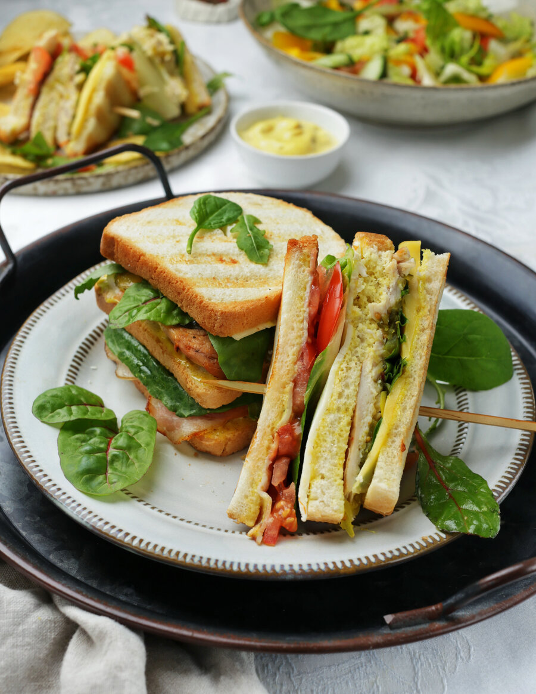

Клаб-сэндвич (клубный сэндвич) — это многоярусный бутерброд, в котором три ломтика хлеба и два слоя разной начинки.
При желании его можно на 3–5 минут поместить под разогретый верхний гриль в духовку или подпечь с двух сторон на сухой сковородке.